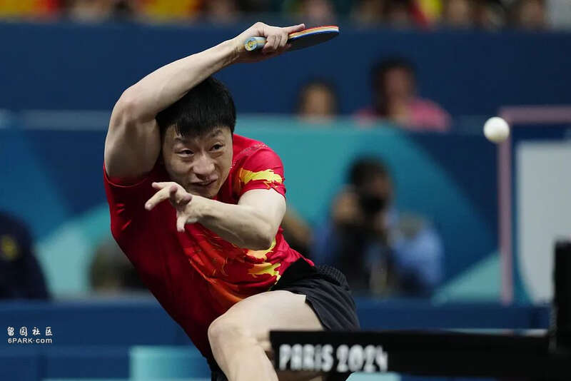
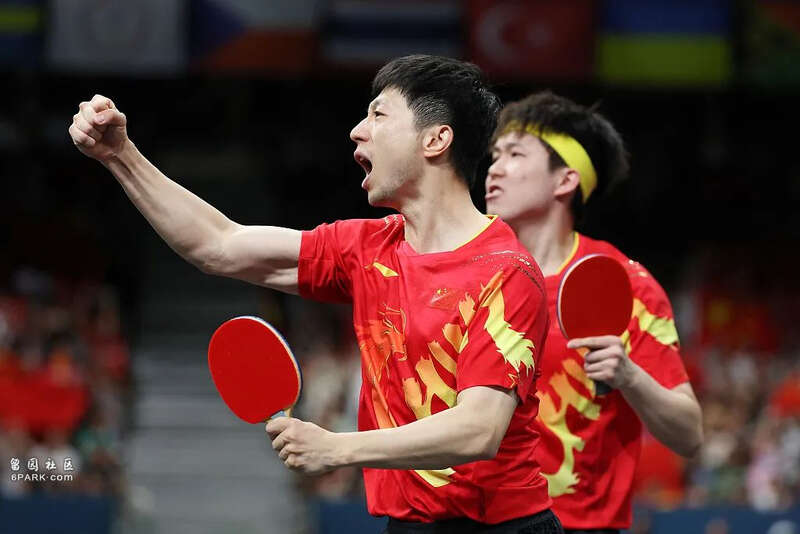
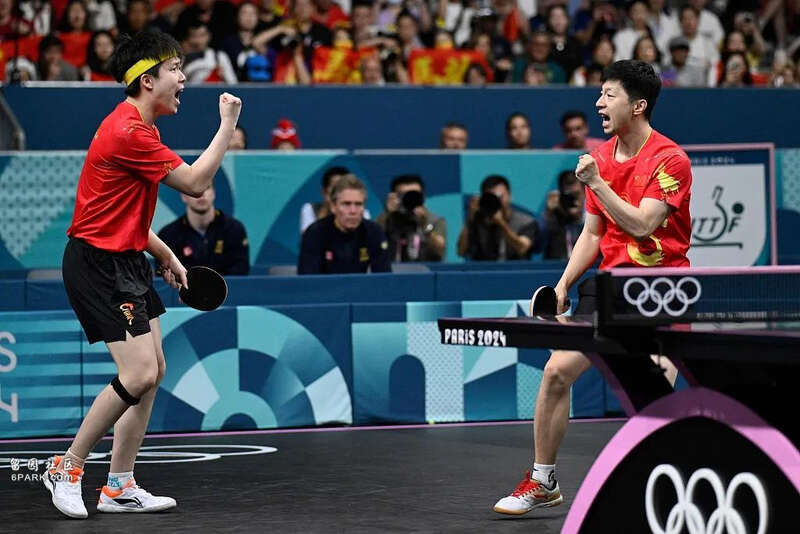
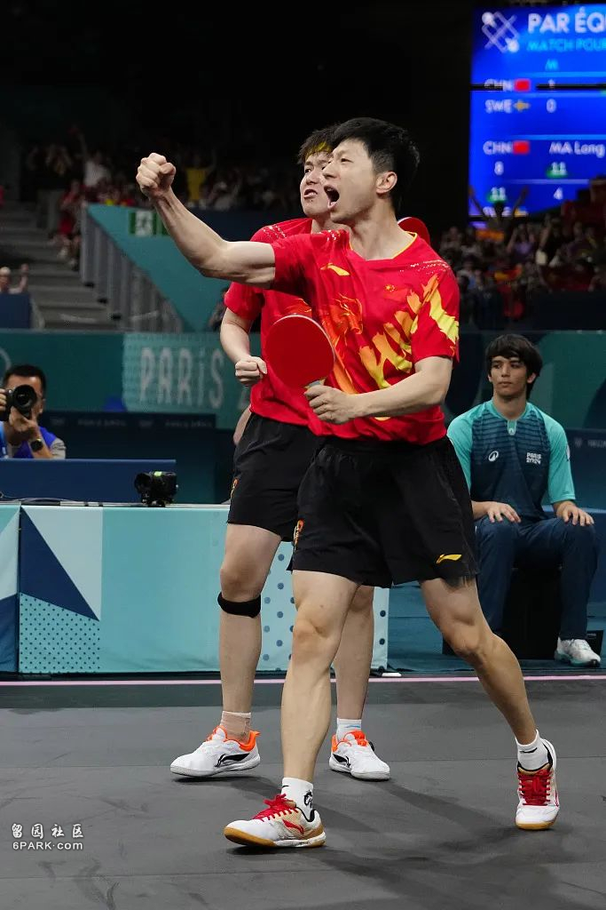
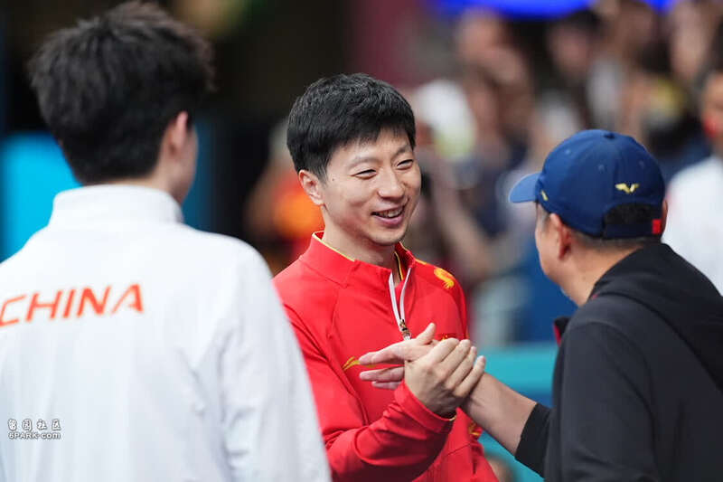
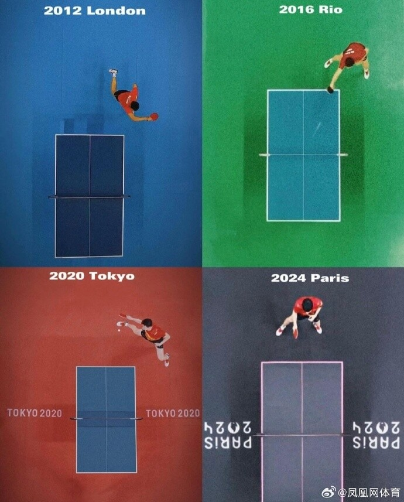

致敬马龙：无关终局，只留传奇
在自己的第四届奥运会上，马龙以一枚团体金牌完美收官。
北京时间8月9日，巴黎奥运会乒乓球男团决赛，由马龙/樊振东/王楚钦组成的中国队，以总比分3比0击败瑞典队，拿下乒乓球男子团体赛金牌。马龙也凭借六枚奥运金牌，成为中国历史上获得奥运金牌最多的球员。
伦敦奥运会，马龙首次亮相奥运会赛场，与队伍一起赢得男子团体赛金牌，拿下了自己的首枚奥运金牌；里约奥运会，马龙赢得男单和男团金牌，首次实现了大满贯的成就；东京奥运会，马龙再次赢得男单和男团金牌，实现了“双圈”大满贯；巴黎奥运会，马龙的奥运之旅以一枚男团金牌完美收官。
此时，距离马龙首次拿下奥运金牌已经过去整整12年。

“马龙巴黎见”
马龙的玩笑似乎总能应验。
2016年里约奥运会，拿下单打冠军并成就大满贯的马龙参加节目时被主持人问道：“这是你的第一次大满贯吗？”马龙回答：“没人有两次大满贯的。”
五年后，马龙在东京奥运会上卫冕男单冠军，成为唯一一个双圈大满贯球员。
2019年马龙接受采访，主持人说：“希望马龙能一直强大，坚持更多时间，打到东京奥运会。”马龙笑着打趣：“我还以为你要说巴黎呢。”
显然，当时的马龙也认为自己可能打不到巴黎奥运会。然而五年后，马龙眼中的不可能成真了：他不仅打到了巴黎奥运会，还在开幕式上担任中国代表团的旗手。
谈及自己的第四次奥运，马龙也难掩激动，“再次踏上奥运会舞台感到非常兴奋，对运动员来说，能够在这个年龄再次参加奥运会、为国出战，是非常荣幸的事情。”
事实上，在通往巴黎的这条路上，马龙也不是没有过犹疑，“感觉好、信心好的时候，觉得可以再挑战一下。状态不好就觉得没必要，还是会有这种摇摆。”
时针拨回到2023年乒乓球亚锦赛，马龙3比2击败樊振东，时隔10年再次夺得乒乓球亚锦赛男单冠军。马龙站上领奖台，球迷们一声声“马龙巴黎见”的口号响彻体育馆。
今年7月，马龙在《人民日报》撰文回想这场比赛时表示：“这次胜利让我增强了信心，鼓励我力争巴黎奥运会参赛资格。”
当时马龙虽然赢下冠军，但他的第一反应却是“难”：“对于现在的我来说，不光是赢得冠军很困难，有时候赢一场比赛都很困难。”
于是本届奥运会，马龙只出战了男子团体项目：“自己现在的能力和状态，如果再去承担奥运会单打，我觉得自己会有些吃力，同时从近几年的表现来看，无论是小胖还是大头，都更值得单打的位置。”
不过当马龙出现在男子团体首场比赛时，观众席依然响起来了球迷的呐喊声，只是这次口号变成了“马龙，不止巴黎见”。

“悲观者正确，乐观者前行”
巴黎奥运周期，马龙的社交媒体有一处不易察觉的细节：他的个性签名从“荣耀的背后刻着一道孤独”，变成了“悲观者正确，乐观者前行”。大意是悲观者往往看到事情的负面，并会因为事情潜在的风险而停滞不前；乐观者尽管面对事情的不确定性，仍然选择前进和尝试。
个性签名的变化，是马龙巴黎奥运周期的写照。
马龙身上始终有着危机感，也不缺放手一搏的勇气。马龙坦言：“我喜欢打球，喜欢钻研，喜欢训练。我没放下球拍，也没有缺席任何一次队内封闭集训——要想保持较高的竞技水平，就必须保证高强度训练。”
乒乓球运动发展数载，胶皮材质、乒乓球大小、参赛人数、战术风格等等变化，如大浪淘沙一般淘汰了一代又一代运动员，但马龙却总能站在金字塔顶端。
对手奥恰洛夫曾这样评价马龙：“他会一直改变自己的打法，如果你回顾他2年前、4年前和6年前，会发现他在技术上总是有变化。以前他打正手、跑动很多，反手没那么强。现在他反手练得很强了，不再用很多正手跑动了。但当局势变得很紧张的时候，他的风格就又回来了。”
接受《人民日报》专访，被问及第四次出战奥运、如果打法被对手研究透了会如何应对，马龙的回答是：“不能把过去的比赛经验带到新的比赛里，因为每一次比赛都是不一样的心态，面对不一样的对手。”

与输赢和解
然而，马龙的巴黎奥运周期并非一帆风顺。
如果说此前几个奥运周期，马龙需要学会如何尽可能多赢球，那么在巴黎奥运周期，马龙则在探索如何接受自己输球。
WTT冠军赛新加坡站，马龙在男单决赛中3比4输给了樊振东；WTT新加坡大满贯，马龙在男单第二轮被德国选手弗朗西斯卡逆转；釜山世乒赛团体赛，马龙半决赛2比3不敌李尚洙——这是马龙继2010年莫斯科世乒赛后，时隔14年再一次在团体赛中输球。
巴黎奥运周期之前，马龙时常会问自己这样一个问题：“你为什么喜欢打乒乓球？是真喜欢打球，还是喜欢赢球的感觉？如果让你经常面对输球的局面，你还能打下去吗？”
那时的马龙答案明确：“我更喜欢赢球的感觉！”
但巴黎奥运周期里，越来越多的输球也会让马龙开始摇摆，“自己还是喜欢打乒乓，至少挺喜欢练。现在有时候比赛老输，你也并不一定老喜欢打比赛。但还是有感情。”
为了这份喜欢，马龙会尝试与输赢和解：“这一两年我变了，变释然了，你得让自己放下来，正确面对赛场上的现实，所以就放开打吧，就当‘半输’‘快要输了’那么去打吧！输球后也能坦然面对自己。”
但与输赢和解并不意味着马龙降低了自己的要求，他在训练场上仍然保持着近乎苛刻的要求：“我不想浪费每一分钟，因为我知道有可能某一天、某一场比赛就是我的最后一场比赛，我就会更加想完美地去完成每一次训练。”
巴黎奥运周期，马龙把自己定位在“3号选手”，其中缘由，来自刘国梁曾对他说过的一段话：“如果以3号的心态去打，可能更适合你。3号对3号之间的竞争你怕谁啊？1号你也不怕，只要把自己放下来，你依然有机会冲击世界上任何优秀的运动员。如果你端着的时候被别人冲击，你的优势本来就在减弱，你的心理负担反而还在加重。”

告别
在大部分时候，马龙是个专注于当下的人。
距离巴黎奥运会还有三个月的时候，马龙在接受《乒乓世界》专访时，被问及“怎样展望巴黎奥运会”，马龙表示：“我现在没有把全部的眼光和目标投放在奥运会上，而是专注于当下每一天的训练，注重自己每一天的感受。”
当马龙真正站在巴黎奥运会的赛场上，被问到“看到球迷们喊出‘马龙不止巴黎见’是什么感受”时，马龙依旧回答：“先在巴黎打好每一场比赛，拿出最好的表现，其他的事还没有太多关注。”
日常接受采访时，挂在马龙嘴边的往往也是：“能赢一场是一场，熬过一天是一天。”
即便马龙再专注当下，他身上依然会不经意流露出告别的气息。
亚运会拿到团体冠军后，马龙笑着说：“之前的亚运会，每次结束后还有下一次，但这次可能是我的最后一届亚运会了。”
德班世乒赛输给王楚钦，马龙先是笑着拥抱了王楚钦，随后抚摸了三次球桌才缓缓离场。马龙解释道：“对于输赢自己现在能够看开，知道这可能是最后一次，有的时候会怀念这座球场，在情感上会有一点不舍，所以最后再摸它一下。”
釜山世乒赛后，马龙左手握拳，右手轻击台面，庆祝自己第九个世乒赛团体赛冠军。马龙赛后说道：“下一届团体赛是两年以后，自己应该不会坚持到那个时候。我的最后一场世锦赛比赛能以胜利结束，我的世锦赛之旅是完美的。”
这些略带离别气息的动作，都是马龙有感而发，他在《绽放巴黎》节目上解释：“2022年的时候，我就觉得这可能是我的最后一届世锦赛了，这些东西都不是刻意想的，脑子里有这样的画面已经很久了。”
虽然现在依旧不确定“鞍山小马”真正的告别时刻何时来到，但可以确定的是，马龙往后的每一步，都是在创造新的历史与传奇。
马龙：这是我奥运最后一舞，结果很完美

北京时间8月10日凌晨，国乒男团横扫击败瑞典，收获奥运5连冠！
赛后，马龙接受采访时说：“这是我奥运会最后一舞，我觉得这个结果很完美！”
马龙还谈到：“其实当时东京奥运会打完以后，自己也没有想到过有一天会还再站在巴黎的赛场。这三年当中，我觉得确实从无论是从心理上还是从技术上还是得到了很多锻炼，或者是有很多这种磨练或者经历确实很不同，但最终能够还是有这样的机会去参加奥运会，还是为奥运会做了很多这种准备，而且也非常开心，身边还有世界上实力最强的两个队友，大家能够共同去为这个目标去努力，我觉得我还是非常幸运的那一个”。
至于退役的问题，马龙表示自己要回去后再考虑。
